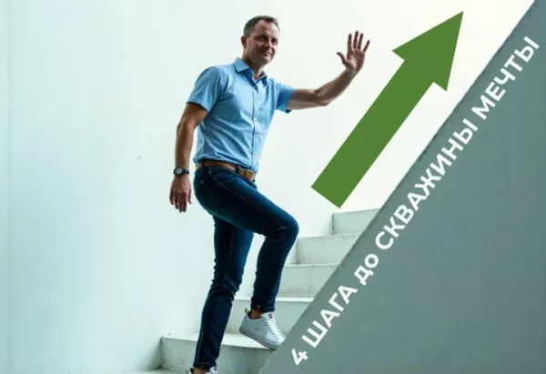
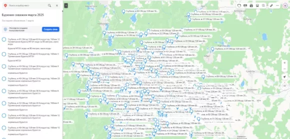
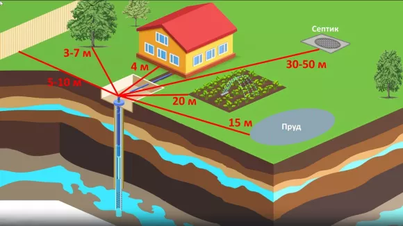
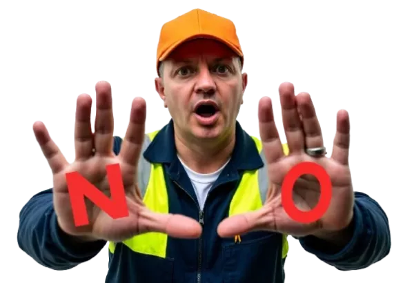

Как мы выбираем место и бурим 1000+ скважин в год без переделок и судов
Я расскажу, как мы в компании «Главный по скважинам» определяем перспективную точку бурения, используя научный подход вместо дедовских методов с «лозой» и танцев с шаманским бубном.
Анализ геологических карт
Свердловская область геологически очень неоднородна. На соседних участках разница в глубине залегания воды может составлять десятки метров! Прежде чем выехать на объект, мы изучаем карты вашего района и данные по ранее пробуренным скважинам. Это даёт нам первичное понимание о примерной глубине и характере водоносных горизонтов.
Геофизическое исследование
Геофизик использует специальное оборудование для вертикального электрического зондирования (ВЭЗ), которое позволяет «просветить» грунт до глубины 150 метров. Этот метод основан на различии электропроводности разных пород. Водоносные слои имеют характерные показатели, которые чётко отличаются от сухого грунта.
По результатам ВЭЗ составляется карта вашего участка с отмеченными перспективными точками для бурения. Проведение исследования не является обязательным на участках с изученной гидрогеологической обстановкой, но категорически показано в местах со сложными геологическими разрезами.

Анализ рельефа
Опытный гидрогеолог может многое сказать, просто осмотрев участок. Характер растительности, наличие заболоченных участков, близость к природным водоёмам, положение участка относительно водоразделов — всё это факторы, влияющие на перспективность той или иной зоны.

Учёт санитарных норм и удобства
Даже если мы нашли идеальную точку с геологической точки зрения, необходимо проверить, соответствует ли она санитарным нормам:
- — Не ближе 30 метров от выгребных ям, септиков;
- — Не под линиями электропередач;
- — Не ближе 5 метров к фундаменту дома;
- — По возможности, выше септика по рельефу;
- — С учётом удобства подъезда буровой (буровая установка весит несколько тонн).
А теперь о том, чего категорически НЕЛЬЗЯ ДЕЛАТЬ:

Не определяйте место «на глаз» или «там, где удобнее»
Это самая распространённая ошибка, которая приводит к необходимости бурить повторно. Лучше спроектировать участок вокруг правильно расположенной скважины, чем мучиться с постоянными проблемами с водой.
Не доверяйте «народным методам» с лозой или маятником
Не доверяйте «народным методам» с лозой или маятником без научного подтверждения. Иногда они работают, но чаще это просто самовнушение.
Не доверяйте непроверенным источникам в интернете
Не доверяйте непроверенным источникам информации в интернете, часто советы там пишут «диванные эксперты». В Свердловской области геология имеет свою специфику и может сильно различаться даже в пределах одного участка. Поэтому за советом лучше обращаться к местным специалистам.
Перейдите на следующую страницу. Я расскажу как в Свердловской области нужно бурить скважину, чтобы с ПЕРВОГО раза и НАВСЕГДА
Нажмите на кнопку чтобы узнать как пробурить скважину за 1 раз и НАВСЕГДА 👇
Узнать как пробурить ➔